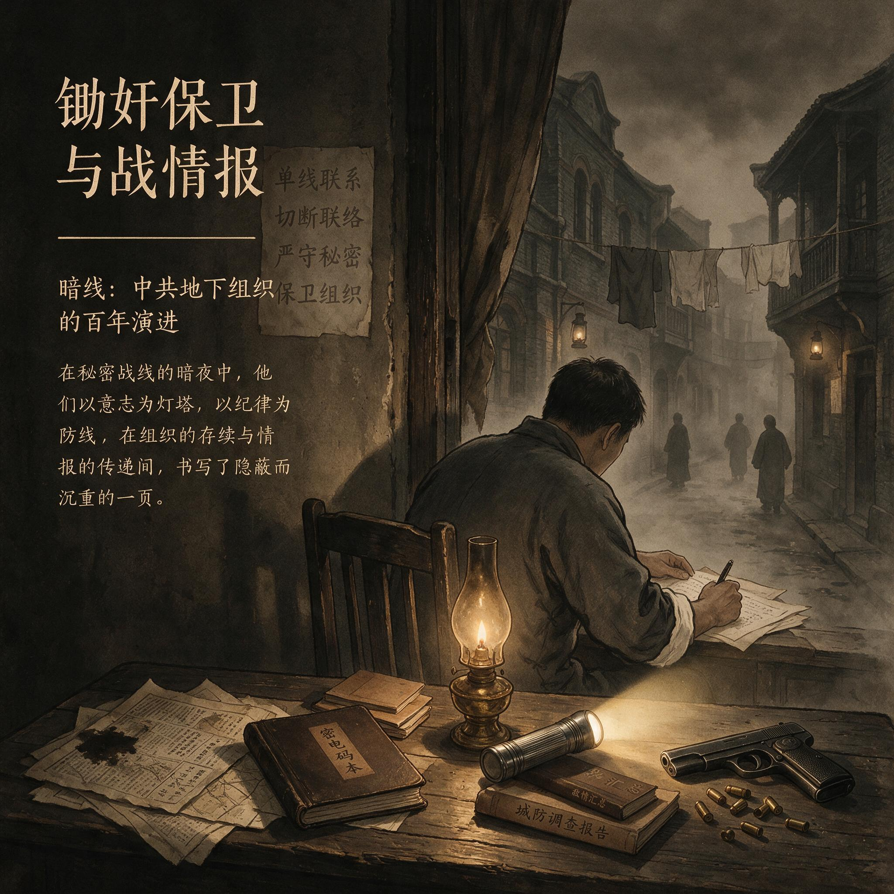

第 8 章
锄奸保卫与战略情报
同一份档案，在锄奸保卫人员眼里是嫌疑清单，在战略情报组织者眼里是操作手册。这个差异不算新。皖南事变刚结束，李克农从桂林撤回延安，被安排进中共中央社会部当副部长，部长是康生。李克农此

锄奸保卫与战略情报：历史出版插图
AI 生成插图，非史实影像。
前近三年以八路军驻桂办事处处长的公开身份做外线工作，接触的是交通运输、统战关系、化名通信和单线联系人。他的组织关系不在桂林市委，而在南方局直辖。回到延安，他进入的却不是一个单纯从事情报的机关，而是一个统管全党情报保卫工作的最高机关。
这个安排看似重用，实际把两条方向相反的秘密工作传统放进了同一个序列。这种并轨从起点就埋着摩擦。
中共的秘密工作到1940年代中前期已经不再是一个统一的特科模式。它分化为两种运行逻辑：根据地内部的锄奸保卫重控制、防渗透、向内镇压；敌占区战略情报重渗透、获取决策信息、向外扩张。
李克农主要代表后一种，康生掌握前一种。两人同在一个部，不是合作，是两种传统在同一机关里的强行并轨。分化不是突然发生的。
1920年代后期到1930年代，中共的秘密工作已经存在两条来源不同的轨道。一条源自苏俄契卡式的国家政治保卫传统，核心手段是内部监控、预审、审讯、隔离和清洗。它在中央苏区落地为各级政治保卫局，任务不只是在根据地边缘设防，还包括在党政军机关内部寻找暗藏敌人。另一条轨道从上海白区工作中发展出来，以中共中央特科为起点，强调打入敌方机构、建立单线联系、利用合法身份和化名掩护，目标是向政权核心渗透，取得预警性、决策性信息。
两类工作共享“秘密”这个词，但秘密的方向相反。保卫的秘密，是为了不让外部知道内部；情报的秘密，是为了不让内部暴露在外部。这个区分一度被组织语言的统一说法盖住：都是“秘密工作”，都要“保卫党”，都要“对敌斗争”。
但落到人员选拔上，差异立刻显形。保卫干部必须可以被日常观察，社会关系简单，履历连续，忠诚可验证。情报干部则需要相反的特质：能建立复杂外围关系，能长期使用伪装身份，能在敌方环境中独立判断。
一个人在根据地被看作可疑的成分，放在敌占区恰恰是生存条件。李克农的个人履历把两条轨道压在同一个人身上过。1929年冬，他化名进入上海无线电管理局，利用国民党中央组织部党务调查科科长徐恩曾的信任升任电务股股长，在特科领导下获取情报。1931年4月顾顺章在武汉被捕投降，钱壮飞截获消息，派其女婿通知李克农，李克农再转报中共中央，中央机关得以紧急转移。
这套链条的效能来自嵌入、截取、传递、预警，不靠个人勇敢，靠的是制度化的单线联系和快速转化机制。1931年冬他到中央苏区后，先后在江西省苏维埃政府政治保卫分局、中华苏维埃共和国临时中央政府政治保卫局和红一方面军政治保卫局任职。此时他执行的是保卫任务，对象从敌人变成内部嫌疑者。
同一个人从外线转入内线，说明1930年代前期的组织还允许秘密干部在两类角色之间流动。但流动不等于融合。两种逻辑的差异只是被暂时搁置，没有被消除。到1939年，搁置条件消失了。这年2月，中共中央社会部成立，康生任部长。
社会部统管全党情报保卫工作，既负责根据地内部的锄奸保卫，也负责敌占区和国统区的战略情报。这意味着两种方向相反的秘密行动要接受同一个机关指挥，遵循同一套组织原则，使用同一批干部。问题不在机构设置本身。战争环境下，由一个中枢机关统管全部秘密工作有操作合理性。
真正的问题是，指挥机关选择以哪一种逻辑作为基准。康生的选择明确。他的经验根基在保卫，不在外线情报。1920年代末至1930年代初他在上海参与白区工作，主要角色是组织审查和内部处置，而非渗透。1931年顾顺章叛变后，康生接手中央特科改组，主导对原特科人员的甄别和清洗。1933年他到莫斯科，在王明领导下参与中共驻共产国际代表团工作，期间接触的主要是苏俄政治保卫的体制模式。1937年回国后，他先后担任中央党校校长、中央敌区工作委员会副主任，1939年直接出任社会部部长。
这条履历线塑造了他的基本判断：秘密工作的首要任务是防止敌人渗透，而不是向敌人渗透。
外部情报只有在服务于内部保卫的前提下才有价值。这个判断直接影响干部配置和行动规则。社会部成立初期，从各根据地抽调了一批保卫干部充实机关。这些人大多来自原政治保卫局系统，习惯的工作方式是审讯、监控、隔离和清理。长期在白区从事外线情报的干部，要么仍留在敌占区无法调回，要么调回后被视为需要“审查”的对象。
原因不难理解：他们社会关系复杂，外围联系人众多，行动方式不符合根据地保卫工作的透明标准。整风运动把这种倾向推向极端。
1942年至1944年的抢救运动期间，大批白区工作干部被怀疑为“特务”或“内奸”，遭到隔离审查和逼供。那些在国统区维持情报网络的人，他们的社会关系、化名经历、与国民党军政人员的接触，全部从“工作需要”变成“嫌疑证据”。社会部本应是统一领导情报保卫的机关，但在整风逻辑下，它最有外线经验的干部反而成了被审查的对象。
保卫逻辑压倒了情报逻辑。后果不是抽象的“路线偏差”，而是具体的人力损失和网络断裂。
一些在敌占区经营多年的情报关系，因为联系人被调回审查而中断；一些潜伏在国民党机构内部的人员，因为上线消失而失去指令；一些原本可以继续深化的嵌入位置，因为无人接应而被迫放弃。这些损失在当时不可能被充分评估，因为评估本身需要依赖外线情报系统提供的信息，而外线情报系统正在被削弱。
判断这个时期的秘密系统，不能只看文件上的“加强情报保卫工作”，还要看谁在掌握解释权。李克农回到延安时，面对的就是这一局面。他作为外线情报的资深实践者，被安排在社会部副部长的位置上，理论上可以参与决策。
但社会部的决策权高度集中在康生手中。李克农能做的事情有限：他主要分管情报训练和部分外线联络工作，不触及保卫系统的核心权限。1942年中央情报部成立后，李克农兼任副部长，这给了他一个相对独立于保卫系统的操作空间。
中央情报部名义上与社会部是“一套人马、两块牌子”，实际运行中，情报部的业务方向更偏向敌区战略情报的搜集和研判，与社会部主导的锄奸保卫形成事实分工。
这种分工不是制度设计的产物，而是摩擦中逐渐形成的权宜安排。1940年代中期，根据地锄奸保卫系统与敌占区战略情报系统之间的分化已经清晰可辨。锄奸系统重控制、防渗透、向内镇压；情报系统重渗透、获取决策信息、向外扩张。
两者在人员选拔、行动规则和考核标准上的冲突是结构性的，不是个人恩怨。锄奸系统要求干部高度封闭、关系单纯、行动可追溯。
一个理想的保卫干部，应当社会关系简单、履历清晰无间断、在根据地内部有长期生活记录，忠诚度可以通过日常行为观察来验证。情报系统却依赖相反的特质：它需要干部有能力建立复杂的外围关系、维持单线嵌入、使用化名和伪装身份、在敌方环境中独立判断。一个优秀的情报员，社会关系必然复杂，履历必然有无法公开的空白，行为方式必然包含在根据地内部看来“可疑”的成分。
两种标准之间的张力，在人事档案里留下清晰痕迹。整风期间，一些被审查的白区干部在交代材料中详细写明了接触过的国民党人员、使用过的化名、执行过的特殊任务。
这些材料本意供审查之用，客观上却记录了一种与保卫逻辑完全不同的行动模式。审查者读这些材料时，看到的是“社会关系复杂”“行动方式可疑”；情报系统的组织者读同样的材料，看到的是嵌入深度和操作经验。同一份档案，在两种逻辑下读出完全相反的含义。
问题还不只在读法。问题在于，这些档案不会消失。它们被归入“待审查”卷宗，等待下一次政治运动重新打开。
1945年初，中央社会部编制了一份《审查工作总结报告》，列举了抢救运动期间审查的白区工作干部人数、甄别平反比例和尚未结案案例数量。这份报告承认“审查面过宽”“方法简单化”“造成一些冤假错案”，同时强调“审查制度本身是必要的，今后应更加规范地进行”。这个结论意味着审查不会被废除，只会被“规范”。但对那些档案仍留在“待审查”卷宗里的干部来说，“规范”是一个含义模糊的词。它可能意味着更精细的甄别，也可能意味着更系统的监控。在这个不确定空间里，秘密系统开始重新分配人力。
一部分被审查后结论存疑的干部，被调离外线情报岗位，转入根据地的保卫、后勤或训练工作。他们的社会关系被切断，活动范围被限定，但同时也获得了某种稳定性：在保卫系统内部，封闭本身就是忠诚的证明。另一部分审查结论相对清晰的干部，被重新派往敌占区，恢复或新建情报网络。他们带着审查档案中的“备注”出发。那些备注上写着“历史问题待查”或“社会关系复杂”。这些文字不会消失，只会在下一次政治运动中被重新打开。
这种人力分配逻辑，塑造了1940年代中后期中共秘密系统的基本格局。锄奸保卫系统吸纳了那些社会关系被清理干净的干部，组织边界越来越清晰，行动规则越来越严格，内部监控越来越密集。
战略情报系统则不得不使用那些履历上有“疑点”的干部，因为只有他们才具备在敌占区生存和渗透的能力。两个系统的人员来源不同、训练方式不同、考核标准不同，但同属一个指挥序列，同受中央社会部和中央情报部领导。这种安排决定了摩擦不会消失，只会在不同政治气候下呈现不同强度。
这里必须正面处理一个解释陷阱。有人认为，中共秘密组织的存续主要靠意识形态狂热，靠个人英雄主义。但事实恰恰相反。外线情报的效能主要不靠狂热。狂热可以让人冒险送一次信，却无法让一个人在敌方机构里维持多年而不暴露。
长期潜伏依赖的是纪律、训练、单线联系制度和信息转化流程。中共在上海白区工作中发展出的那一套，并不是浪漫主义的产物，而是顾顺章叛变后用血腥教训换来的制度调整。
1931年以前，横向信息集中意味着效率，顾顺章叛变后，它变成致命弱点。此后单线联系从灵活做法升级为严格制度。这种制度能力，才是战略情报得以运转的基础。
同样，保卫系统的高压也不能只用康生个人性格来解释。苏俄契卡传统在中国根据地落地，有其制度逻辑。
根据地是一个试图全面控制的环境，内部安全被认为是政权存续的前提。当外部敌人不断渗透、叛变事件反复发生时，保卫系统的权力自然扩张。它的目标不是在敌方机构里获取信息，而是在自己队伍里找到可能造成最大损害的那个人。
这个任务带有强烈的预防性，它不等待行为发生，而是提前清除嫌疑。因此保卫系统天然倾向于扩大审查面，因为漏掉一个真的比冤枉十个更难接受。这种逻辑并不依赖某个人的残暴，而在制度激励结构里。
但两种逻辑的冲突不是等价的。在战争期间，情报系统能提供即时验证的效能，保卫系统却不能。一个外线情报关系能不能用，可以通过他传回的消息是否准确来检验。一个潜伏在国民党军事指挥机构里的人，如果持续提供军队调动和作战计划，并且事后证明真实，他的价值就是可量化的。
这种效能验证让情报系统在战争最激烈阶段获得了一定程度的话语权。而保卫系统的“防止渗透”却很难有即时验证。它自己清除了一批隐患，但无法证明这些隐患真的会变成叛徒。
这使得保卫系统在战争效能压力下，不得不暂时给情报系统让路。1945年抗战胜利后，两大系统同时扩张。随着中共控制区域扩大，锄奸保卫系统规模急剧膨胀。各解放区建立社会部分支机构，配备专职保卫干部，职能覆盖从机关内部审查到社会面管控的广泛领域。
国共内战一触即发，战略情报需求空前迫切。中央情报部加大对国民党军政系统内部嵌入的投入，试图在决战前夕获取决策层情报。两个系统在同一时期扩张，方向却截然相反。保卫系统向内收紧，情报系统向外伸展。
它们之间的权限边界从未被明确划定，因为划定边界本身意味着承认两种秘密工作逻辑不可通约。这在组织原则上不被允许：理论上，所有秘密工作都必须服从党的统一领导，不存在独立于保卫逻辑之外的情报逻辑。实践不会因为理论不承认而消失。
1946年至1947年间，一些解放区出现保卫系统干预情报系统运作的现象。情报系统在敌占区建立的外围关系，有时被保卫系统视为“可疑社会关系”而纳入监控；情报干部在敌区的行动方式，有时被保卫系统以“不符合组织纪律”为由提出质疑。
这些摩擦通常不在正式会议上解决，而是通过两个系统负责人之间的私下沟通来缓和。李克农在这一时期扮演缓冲角色。
他既理解情报系统的运作逻辑，也熟悉保卫系统的组织规则，能用保卫系统听得懂的语言解释情报行动的必要性。但这种个人化协调机制是脆弱的。它依赖李克农个人的威望和关系网络，不是制度化解决方案。
1948年，解放战争进入战略决战阶段，战略情报的重要性在事实上获得优先地位。情报系统提供的国民党军队调动、部署和作战计划信息，对中共中央决策产生直接影响。这种效能使保卫系统暂时收缩对情报系统的干预。
这不是制度让步，而是战争压力下的权宜容忍。情报系统在这种容忍中获得一定程度运作自主性，能相对独立地维持对敌方决策层的嵌入，集中资源保障信息链路畅通，不必频繁应对来自内部的审查压力。这种自主性有限。
它建立在战争效能的即时验证之上。一旦战争结束，效能验证标准就会改变。到那时，情报系统在敌占区积累的社会关系、行动方式和组织习惯，将重新暴露在保卫逻辑的审视之下。
那些在战争中被暂时搁置的“待审查”档案，那些干部履历上写着“历史问题待查”的备注，那些在情报行动中被视为正常却在保卫标准下被视为可疑的行为，都将在新的政治环境中被重新定义。李克农在1948年底的一份内部报告中，建议对情报系统干部进行分类管理，将“特殊工作关系”与“一般组织关系”区分开，以避免保卫系统对情报网络的误伤。这个建议触及了两种逻辑冲突的核心。它没有从根本上解决问题。分类管理的前提是承认两类干部适用不同标准，而在组织原则上这仍然敏感。报告被批转相关部门“研究参考”，没有形成正式制度。
从制度比较的视角看，这个时期中共秘密系统内部的分化并非中国独有的现象。苏俄在建立国家政治保卫局时，也把对内安全和对外情报放在同一个机构框架下，最终同样出现内部清洗侵蚀外部情报能力的趋势。区别在于，中国革命根据地的外线情报技术是在本土白区环境中成长起来的，它比苏俄契卡传统更讲究嵌入、单线联系和合法身份运用。
本土传统有更强的实战能力，却在组织上一度被苏俄传统压过。1940年代中后期的分化与统合，实际上是两种传统在特定战争条件下重新讨价还价。这种讨价还价的结果，不是谁取代谁，而是形成了一种交错格局。
保卫系统在根据地内部继续扩大控制面，情报系统则在敌占区保持相对独立。中央机关里，社会部与中央情报部共享领导层，但实际业务各有侧重。地方分支中，保卫干部与情报干部常常来自不同来源，甚至互相不熟悉。这种不熟悉反而为情报系统的相对独立提供了条件。如果两类干部被彻底混编、频繁轮换，外线情报网络可能会被保卫纪律磨平。相对独立，让外线干部得以按照敌区环境的节奏工作，而不是按照根据地内部审查的标准生活。
正因如此，到1948年至1949年，战略情报系统已经有能力在国民党军事指挥体系内部维持多条信息渠道。这不是从理论上统一了两种逻辑，而是从组织上给向外的那条线留出了缝隙。
1948年秋，济南战役前后，战略情报系统的“战时豁免”以一种非正式方式表现出来。国民党第二绥靖区司令部内部潜伏人员传出的城防部署和兵力调动信息，在到达中央情报部之前，先要经过几个中转站。其中一处中转站设在解放区边缘，由情报系统的地方工作站掌握。
当地锄奸保卫部门曾要求清查该站人员的社会关系和往来函电，理由是“边界地带人员复杂，须防敌特混入”。情报系统没有拒绝，只提供了一份用代号标注的联系人清单，没有真实姓名、住址和接触方式。保卫部门认为这是“不配合审查”，把情况上报到中央社会部。
李克农没有在正式会议上表态，只向前方传达了一个“任务优先”的口径：情报关系仍在使用，此时不宜强行核查，待任务结束后再补报材料。“任务结束后”是一个弹性时间。在战争节奏下，一项任务还未结束，下一项任务已经开始。补充材料的事就此搁置。
这种搁置不是懒政，而是两套行动规则在时间感上的差别。保卫系统的时间感是循环的、回溯性的，它要反复回到起点，核对一个人的历史是否清白。情报系统的时间感是线性的、向前滚动的，它只关心当下这条信息能否在敌方作出决策前送到。保卫干部要的是“全部关系，逐人说明”；情报干部要的是“暂时封闭，不要惊动”。同样一份清单，在保卫系统那里是残缺不全的呈报，在情报系统那里是保护网络的最低限度披露。
1948年下半年，类似摩擦在华北、华东多个解放区出现，但没有一件上升为公开的组织处分。原因很简单：前线正在进行的战役需要情报系统提供国民党军队的实时调动。谁破坏了这条链路，谁就要承担战役情报迟滞的责任。这个责任比“审查不严”更直接、更可量化。
因此，保卫系统对情报系统的干预，在1948年呈现为一种“有保留的容忍”。保卫系统继续登记、继续质疑、继续要求补报材料，但不采取强制措施切断关系。情报系统则继续隐瞒部分关键关系，只提交足以应付审查的最低信息。
双方都知道这种状态不稳固，但都选择不打破它。打破的成本在战时是显性的：失去一条有价值的情报线，可能意味着一次战斗的误判；而维持现状的成本是隐性的，只会在战后清算时才被看见。这种不对称的成本结构，决定了战时情报系统能够保住相对独立的运作空间。它不是通过正面对抗获得的，而是通过反复让渡一部分信息控制权，同时保住核心关系不为保卫系统掌握。
李克农的建议虽然只被批示“研究参考”，但在实际中，情报系统已经在按照分类管理的精神自行操作。特殊工作关系不进入一般干部档案，另立登记，由情报系统核心圈子掌握。这种做法没有制度授权，却在1948年底已经半公开存在。各级党委对此睁一只眼闭一只眼，因为不知道哪一天哪条情报会决定战役成败。
保卫系统的人在等待一个答案：这些特殊关系究竟是什么人？情报系统的人也在等待一个答案：战争什么时候可以不再需要这些关系？两个答案都不会在1948年出现。唯一确定的是，战略情报系统在战争最后阶段获得的那种相对独立，正是建立在许多类似“任务结束后再补报”的承诺之上。这些承诺从未兑现，也不想兑现。它们悬挂在秘密系统的日常运行里，像一份份没有结案日期的卷宗。这些卷宗没有合订，也没有统一编号，只是分别存放在各地方社会部的铁皮柜里。直到1949年，它们仍然在增加，而不是减少。
这个缝隙不是正式制度设计的成果，而是战争压力、干部短缺、效能验证和个人协调共同作用的结果。它可以随时被关闭，但它在最需要的时候没有关闭。
回到开篇那份档案。同一份档案在两种逻辑下读出相反含义，这个事实没有被解决。它只是被战争暂时压后。
档案袋上标注的“待审查”三个字，在当时语境中是技术性用语，表示审查程序尚未结束，结论尚未最终确定。实际操作中，“待审查”却是一个可以无限延续的状态。没有人会主动宣布它结束，因为宣布结束意味着承担责任：要么确认干部清白，承认当初审查错了；要么确认干部有问题，给出处理意见。两种选择都有政治风险。最安全的做法是不做选择，让“待审查”状态持续下去。于是这份卷宗从1945年留到1949年，又从1949年留到更远的将来。它是一枚制度上的定时装置。它记录的不是某个人的清白或有罪，而是两种秘密工作逻辑在同一组织内部无法调和的证据。锄奸保卫系统认为可疑的，恰恰是战略情报系统赖以生存的。
这个矛盾不会因为战争胜利被遗忘，只会在和平时期以更尖锐的形式重现。当外部敌人不再构成直接威胁时，保卫逻辑会把目光转向内部，重新审视那些曾经在敌占区以非常规手段工作的人。但1948年的战争压力还没有给这个时刻到来。
中共即将取得全国政权，秘密系统面临从革命工具向国家机器的转变。锄奸保卫系统将演变为公安、检察和内部保卫机关，战略情报系统将演变为国家情报机构。两种逻辑的冲突不会因为政权更迭自动消失，只会在新的制度框架中寻找新的表达方式。这一章的落点因此不在某个人的命运，也不在某个机构的名称，而在一个组织前提的生成。
战略情报系统从根据地保卫中相对独立出来，不是靠一道清晰的制度划界，而是靠战争效益、干部分流和临时协调共同撑开的空间。这个空间不稳固，但它足够让情报系统在1948年前后集中资源维持对敌方决策层的嵌入。内战情报优势的生成，不是由于秘密系统变得统一，而是由于它被迫在保卫与情报之间裂开一道缝，让向外的那条线终于可以单独呼吸。这个前提是脆弱的、可逆的。但在1949年以前，它兜住了中共在战争末期最需要的那些信息。